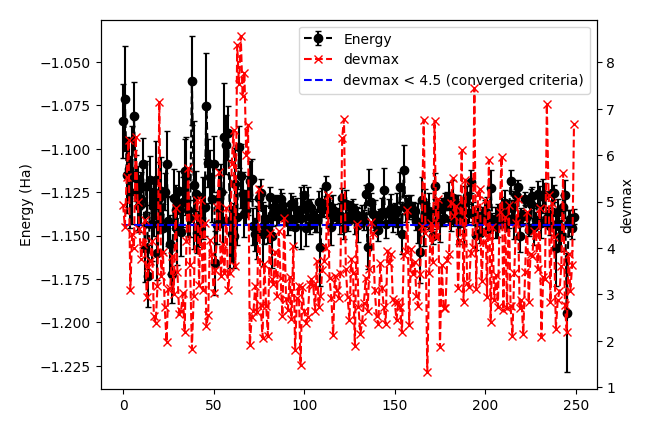
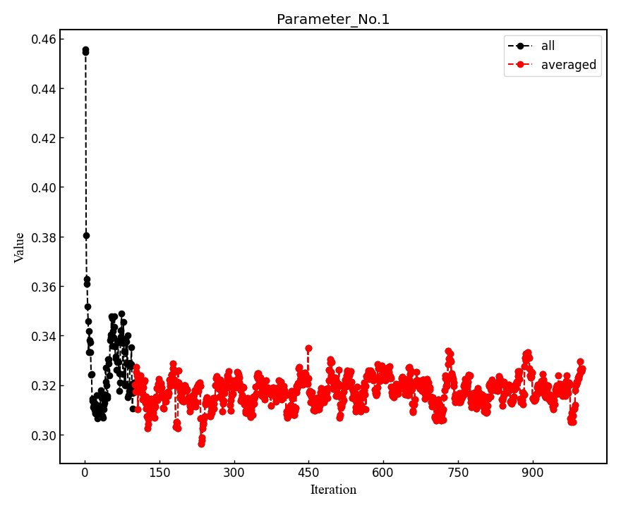
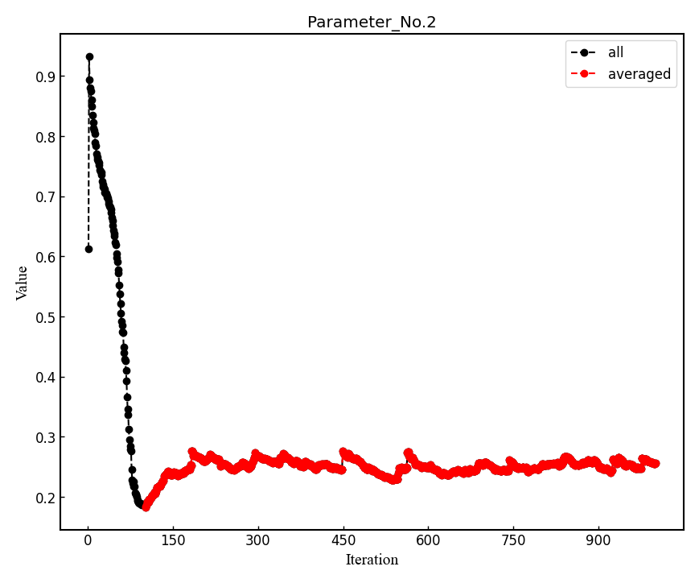
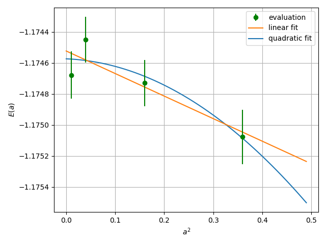

The simplest example: the hydrogen dimer with a Jastrow–Slater single-determinant ansatz via Variational Monte Carlo (VMC) and lattice-regularized Diffusion Monte Carlo (LRDMC)
00 Introduction
In this tutorial, you will compute all-electron VMC and LRDMC energies of the hydrogen dimer (H2) using Turbo-genius. You will begin with a DFT calculation in PySCF, construct a Slater determinant from the DFT results, add a Jastrow factor, and optimize the Jastrow parameters via stochastic reconfiguration (natural-gradient) optimization. After the variational optimization, you will evaluate observables with Markov chain Monte Carlo (MCMC) and, finally, perform an LRDMC calculation using the optimized wave function. All input and output files for this tutorial can be downloaded here.
01 Preparing a JDFT trial wavefunction using PySCF
First, we will generate a JDFT trial wavefunction by starting from the Hartree-Fock or DFT calcualtion using PySCF. We assume that you already have a working copy of PySCF, e.g. by pip install pyscf.
The procedure is as follows:
Run the PySCF calculation by typing:
# pyscf calculation
cd 01_trial_wavefunction
python3 pyscf_H2.py
Convert the generated PySCF checkpoint file to a TREXIO file by typing:
# pyscf chkfile to TREXIO
trexio convert-from -t pyscf -i H2.chk -b hdf5 H2.hdf5
Convert from the TREXIO file to the TurboRVB wavefunction file by typing:
trexio-to-turborvb H2.hdf5 -jasbasis cc-pVDZ -jascutbasis
Then, you will have the TurboRVB wavefunction file fort.10 as well as the pseudopotential file pseudo.dat.
Note
The basis set files will be downloaded from the basis set exchange website for the first time turbogenius is executed, and stored in the .turbo_genius_tmp directory in the user’s home directory.
Note
When the PySCF calculation fails:
Check if the basis set is available,
Verify the molecular geometry file exists,
Ensure that the sufficient memory allocation is available.
Notes on the PySCF script
The Python code for the PySCF calculation is given as follows:
#!/usr/bin/env python
# coding: utf-8
# pySCF -> pyscf checkpoint file (NH3 molecule)
# load python packages
import os, sys
# load pyscf packages
from pyscf import gto, scf, mp, tools
#open boundary condition
checkpoint_file="H2.chk"
output="out_H2"
charge=0
spin=0
basis="ccecp-ccpvtz"
ecp='ccecp'
#scf_method="HF" # HF or DFT
scf_method="DFT" # HF or DFT
dft_xc="LDA_X,LDA_C_PZ" # XC for DFT
# build a molecule
mol = gto.Mole()
#mol.atom = '''
# H 0.00000000 0.00000000 -0.360000000
# H 0.00000000 0.00000000 0.360000000
# '''
mol.atom = 'H2_dimer.xyz'
mol.verbose = 5
mol.output = output
mol.unit = 'A' # angstrom
mol.charge = charge
mol.spin = spin
mol.symmetry = False
# basis set
mol.basis = basis
# define ecp
mol.ecp = ecp
# molecular build
mol.build(cart=False) # cart = False => use spherical basis!!
# calc type setting
print(f"scf_method = {scf_method}") # HF/DFT
if scf_method == "HF":
# HF calculation
if mol.spin == 0:
print("HF kernel = RHF")
mf = scf.RHF(mol)
mf.chkfile = checkpoint_file
else:
print("HF kernel = ROHF")
mf = scf.ROHF(mol)
mf.chkfile = checkpoint_file
elif scf_method == "DFT":
# DFT calculation
if mol.spin == 0:
print("DFT kernel = RKS")
mf = scf.KS(mol).density_fit()
mf.chkfile = checkpoint_file
else:
print("DFT kernel = ROKS")
mf = scf.ROKS(mol)
mf.chkfile = checkpoint_file
mf.xc = dft_xc
else:
raise NotImplementedError
total_energy = mf.kernel()
# HF/DFT energy
print(f"Total HF/DFT energy = {total_energy}")
print("HF/DFT calculation is done.")
print("PySCF calculation is done.")
print(f"checkpoint file = {checkpoint_file}")
This program performs electronic structure calculations for an H2 molecule using the PySCF (Python-based Simulations of Chemistry Framework) library.
Configuration Parameters
Checkpoint File:
H2.chkOutput File:
out_H2Molecular Properties:
Charge: 0 (neutral molecule)
Spin: 0 (closed-shell system)
Basis Set:
ccecp-ccpvtz(relativistic basis set)ECP (Effective Core Potential):
ccecp
Calculation Method
The program supports two calculation methods:
Hartree-Fock (HF)
Restricted Hartree-Fock (RHF) for closed-shell systems
Restricted Open-shell Hartree-Fock (ROHF) for open-shell systems
Density Functional Theory (DFT)
Currently configured to use DFT
Exchange-correlation functional:
LDA_X,LDA_C_PZ(Local Density Approximation)Restricted Kohn-Sham (RKS) for closed-shell systems
Restricted Open-shell Kohn-Sham (ROKS) for open-shell systems
Molecular Structure
Structure is read from
H2_dimer.xyzfile that contains:2 H2_dimer H 0.00000000 0.00000000 -0.37050000000000000000 H 0.00000000 0.00000000 0.37050000000000000000
Units: Angstroms (Å)
Symmetry: Disabled
Uses spherical harmonics (
cart=False)
Program Flow
Load required Python and PySCF packages
Configure molecular parameters
Build molecular structure
Select and execute calculation method
Calculate total energy
Save results to checkpoint file
Output
The program outputs:
Total HF/DFT energy
Calculation status messages
Checkpoint file location
Notes
The program serves as a template for basic electronic structure calculations
Particularly suitable for simple molecular systems like H2
Results are saved in a checkpoint file for potential further analysis
02 Jastrow factor optimization (WF=JDFT)
In this step, Jastrow factors are optimized at the VMC level using vmcopt module of Turbo-Genius.
First, copy the trial wavefunction fort.10 generated by the DFT calculation, as well as the pseudo potential file pseudo.dat, to 02_optimization directory:
cd ../02_optimization/
cp ../01_trial_wavefunction/fort.10 .
cp ../01_trial_wavefunction/pseudo.dat .
To generate datasmin.input, which is a minimal input file for a VMC-optimization:
turbogenius vmcopt -g -opt_onebody -opt_twobody -opt_jas_mat -optimizer lr -nw 128 -vmcoptsteps 200 -steps 100
There are command-line variables -opt_XXXXX which can be used to specify the type of VMC optimization to be used. Currently the following options are implemented:
-opt_onebody(default:True): optimize the homogenius and imhomogenius one-body Jastrow part.
-opt_twobody(default:True): optimize the two-body Jastrow part.
-opt_det_mat(default:False): optimize the matrix element of the determinant part.
-opt_jas_mat(default:True): optimize the matrix element of the Jastrow part.
-opt_det_basis_exp(default:False): optimize the exponents of the determinant part.
-opt_jas_basis_exp(default:False): optimize the exponents of the Jastrow part.
-opt_det_basis_coeff(default:False): optimize the coefficients of the determinant part.
-opt_jas_basis_coeff(default:False): optimize the coefficients of the Jastrow part.
You can also specify an optimization algorithm via -optimizer command-line variable.
sr: Stochastic Reconfiguration method. See J. Chem. Phys. 127, 014105 (2007) and the review paper.
lr: Linear method with natural gradients. See Phys. Rev. B 71, 241103(R) (2005), Phys. Rev. Lett. 98, 110201 (2007), and review paper.
There are other command-line options to specify the calculation conditions, such as:
-vmcoptsteps: The number of optimization steps.
-steps: MCMC steps per optimization step. The actual number of sampling points isstepstimesnwbelow.
-nw: The number of workers. When the calculation is carried out in parallel, the number of MPI processes Np must be a divisor ofnw. Ifnwis omitted, it is set equal to the number of Np.
See the command reference for the detailed description of commandline options. The uses may consult the wavefunction optimization section for parameter choices.
The input file datasmin.input should look something like:
&simulation
itestr4=-4
ngen=20000
iopt=1
maxtime=3600
disk_io='mpiio'
nw=128
/
&pseudo
npsamax=4
/
&vmc
epscut=0.0
/
&optimization
ncg=1
nweight=100
nbinr=1
iboot=0
tpar=0.35
parr=0.001
iesdonebodyoff=.false.
iesdtwobodyoff=.false.
twobodyoff=.false.
/
&readio
/
¶meters
iesd=1
iesfree=1
iessw=0
iesup=0
iesm=0
/
&kpoints
/
&dynamic
/
Now you can launch the VMC optimization:
export TURBOVMC_RUN_COMMAND="mpirun -np 16 turborvb-mpi.x"
turbogenius vmcopt -r
Note
There are several ways to run the optimization calculation:
Using TurboGenius interface
by typing as follows to run the serial version
turbogenius vmcopt -r
or by specifying the internal command by an environment variable as follows to run the parallel version
export TURBOVMC_RUN_COMMAND="mpirun -np XX turborvb-mpi.x" turbogenius vmcopt -r
where XX is the number of MPI processes. The MPI execution command (mpirun and the options) should be replaced according to the type of the MPI library.
Using directly the TurboRVB executables
to run the serial version:
turborvb-serial.x < datasmin.input > out_min
or to run the parallel version:
mpirun -np XX turborvb-mpi.x < datasmin.input > out_min
Using the batch job scheduler
on a cluster machine running the PBS job scheduler:
qsub submit.shon a cluster machine running the Slurm job scheduler:
sbatch submit.shwhere
submit.shis an appropriate job script that invokes the serial or parallel version of TurboRVB executables or TurboGenius interface.
Note
You can stop the optimization by writing 0 into stop.dat.
Now, for post-processing, use:
turbogenius vmcopt -post -optwarmup 80 -plot
# and then please follow the instructions.
Note
The corresponding command in turborvb is:
readalles.x < readalles.input > out_read
It plots energy with the error bars and devmax w.r.t. optimization steps (plot_energy_and_devmax.png). e.g.,
eog plot_energy_and_devmax.png
{kind=link}

In the plot, devmax is below the converged criteria of devmax = 4.5, hence we can say the convergence is achieved.
Post-processing performs three important functions:
The parameters of Jastrow were optimized over ngen / nweight ( = vmcoptsteps ) iterations. When
--plotoption is specified, the post-processing plots all the parameters with respect to iterations which is saved in all_parameters_saved. Check png files in parameters_graphs directory (e.g., eog parameters_graphs/Parameter_No*_averaged.png). Here, we show the plots of first two parameters:

In the second step post-processing averages optimized variational parameters. In our case, this is done over the last several thousands optimisation steps. If you wish to change the number of steps you can specify the
-optwarmupoption. The average values of parameters are stored in the file Average_parameters.dat.Finally a dummy VMC calculation is done in ave_temp to write these averaged parameters in
fort.10. The final averaged WF isfort.10. The original WF is renamed asfort.10_bak
{kind=link}
{kind=link}
Warning
For a real run, one should optimize variational parameters much more carefully. We recommend that one consult to an expert or a developer of TurboRVB.
03 VMC (WF=JDFT)
The next step is to run a single-shot VMC calculation
This is done using the vmc module of Turbo-Genius.
First, copy fort.10 and pseudo.dat from 02_optimization to 03_VMC:
cd ../03_vmc/
cp ../02_optimization/fort.10 .
cp ../02_optimization/pseudo.dat .
Now generate an input file datasvmc.input using:
turbogenius vmc -g -steps 1000 -nw 128 -force
The option -force (default: False) allows us to compute VMC forces.
It should look something like the following:
&simulation
itestr4=2
ngen=10000
maxtime=86400
iopt=1
disk_io='mpiio'
nw=128
/
&pseudo
npsamax=4
/
&vmc
/
&readio
/
¶meters
ieskin=1
/
&kpoints
/
Run the VMC calculation:
export TURBOVMC_RUN_COMMAND="mpirun -np 16 turborvb-mpi.x"
turbogenius vmc -r
See Note in the optimization step for the ways to run the calculations.
After the VMC run finishes, use post-processing to check the total energy:
turbogenius vmc -post -bin 10 -warmup 5
Note
This corresponds to running forcevmc.sh 10 5 1
by using the values in this example:
bin length = 10
init bin = 5
pulay = 1 (default)
Chosen values: bin=10, init_bin=5, pulay=1, => equil_steps=50
Postprocessing basically does reblocking using the binning technique. Here again post-processing has two modes: manual and interactive. The reblocked total energy and error are written in the file pip0.d.
% cat pip0.d
Energy = -1.17284117753204 1.253988599211879E-004
The obtained forces are written in the file forces_vmc.dat.
% cat forces_vmc.dat
Force component 1
Force = 2.966615810205714E-003 1.199178968598954E-003 2.752792621302076E-005
Der Eloc = 3.335617738742622E-002 1.231330962370900E-003
<OH> = 0.590121966419686 7.112041263498287E-004
<O><H> = -0.605316747208296 7.014897543031068E-004
2*(<OH> - <O><H>) = -3.038956157722050E-002 1.214861001943852E-004
Warning
Force component 1 refers to the sum of the forces of the first line (i.e., 2 1 3 -2 3) in fort.10. The first index is the number of force components and the second and third are the nucleus index and the direction (x:1, y:2, z:3 for a positive nucleus index whereas -x:1, -y:2, -z:3 for a negative nucleus index). Indeed, the forces in the z-direction acting on the first and second hydrogen atoms are -2.74e-4 Ha/Bohr and +2.74e-4 Ha/Bohr, respectively. Not -5.48e-4 Ha/Bohr and +5.48e-4 Ha/Bohr.
04 LRDMC (WF=JDFT)
Lattice regularized diffusion Monte Carlo (LRDMC) is a projection technique that can improve a trial wavefunction obtained by a DFT calculation or a VMC optimization systematically. Indeed, this method filters out the ground state wavefunction from a given trial wavefunction. See the original Casula’s paper, or the review paper in detail.
There is the so-called lattice-space error in LRDMC because the Hamiltonian is regularized by allowing electrons hopping with finite step size alat (Bohr). Therefore, one should extrapolate energies calculated by several lattice spaces (alat) to obtain an unbiased energy (\(alat \to 0\)).
Please create a folder for each alat, and copy an optimized fort.10 and pseudopotential file from 03_vmc to the current alat directory. To generate lrdmc input files for a LRDMC calc.:
cd ../04_lrdmc
cp ../../03_vmc/fort.10 .
cp ../../03_vmc/pseudo.dat .
turbogenius lrdmc -g -etry -1.10 -alat -0.20 -steps 10000 -nw 128
-etry: Put an obtained DFT or VMC energy. \(\Gamma\) in Eq. 6 of the review paper is set 2 \(\times\)etry-alat: The lattice space for discretizing the Hamiltonian. If you do a single grid calculation (i.e., alat2=0.0d0), please put a negative value. If you do a double-grid calculation (See the Nakano’s paper), put a positive value and setiesrandoma=.true.. This trick is needed for satisfying the detailed-balance condition.
Note
Currently, TurboGenius automatically sets double grid calculations for all electron systems with \(Z > 2\), and single-grid otherwise. If you want to do something different, please change the input files manually.
alat2: The corser lattice space used in the double-grid calculation. If you put 0.0d0, Turbo does a single grid calculation. If you want to do a double-grid calculation for a compound include Z > 2 element, please comment out alat2 because alat2 is automatically set. See the Nakano’s paper.
The input file datasfn.input should look something like:
&simulation
itestr4=-6
ngen=10000
iopt=1
maxtime=86400
disk_io='mpiio'
nw=128
/
&pseudo
npsamax=4
/
&dmclrdmc
tbra=0.1
etry=-1.1
Klrdmc=0.0
alat=-0.2
alat2=0.0
gamma=0.0
parcutg=1
typereg=0
npow=0.0
/
&readio
/
¶meters
/
&kpoints
/
Now run the LRDMC calculation:
export TURBOVMC_RUN_COMMAND="mpirun -np 16 turborvb-mpi.x"
turbogenius lrdmc -r
See Note in the optimization step for the ways to run the calculations.
For post-processing use:
turbogenius lrdmc -post -bin 20 -corr 3 -warmup 5
Note
This corresponds to forcefn.sh 20 3 5 1.
The total energy and error are written in the file pip0_fn.d.
Thus, we get \(E (a=0.20 {\rm bohr})\) = -1.1744(7) Ha.
05 LRDMC (WF=JDFT) Extrapolation.
Warning
For the hydrogen dimer, extrapolation is not needed because the energies are almost constant in the region. Try to plot evsa.gnu with gnuplot later.
If you want to extrapolate energies, collect all LRDMC energies into evsa.in in the 05_lrdmc_extrapolation directory, and perform the extrapolation.
First, prepare the input files for all alat.
cd ./05_lrdmc_extrapolation alat_list="0.10 0.20 0.40 0.60" lrdmc_root_dir=`pwd` for alat in $alat_list do cd alat_${alat} cp ../../03_vmc/fort.10 . cp ../../03_vmc/pseudo.dat . turbogenius lrdmc -g -etry -1.10 -alat -$alat -steps 10000 -nw 128 cd ${lrdmc_root_dir} done
Second, run the LRDMC calculations.
export TURBOVMC_RUN_COMMAND="mpirun -np 16 turborvb-mpi.x" alat_list="0.10 0.20 0.40 0.60" lrdmc_root_dir=`pwd` for alat in $alat_list do cd alat_${alat} turbogenius lrdmc -r cd ${lrdmc_root_dir} done
Third, run the postprocessing.
alat_list="0.10 0.20 0.40 0.60" lrdmc_root_dir=`pwd` num=0 echo -n > ${lrdmc_root_dir}/evsa.gnu for alat in $alat_list do cd alat_${alat} num=`expr ${num} + 1` echo -n "${alat} " >> ${lrdmc_root_dir}/evsa.gnu grep "Energy =" pip0_fn.d | awk '{print $3, $4}' >> ${lrdmc_root_dir}/evsa.gnu cd ${lrdmc_root_dir} done
The results can be shown, e.g. by using gnuplot:
gnuplot # p "evsa.gnu" u 1:2:3 with yerrFinally, perform extrapolation of the obtained energies.
sed "1i 1 ${num} 4 1" evsa.gnu > evsa_lin.in # linear fitting sed "1i 2 ${num} 4 1" evsa.gnu > evsa_quad.in # quadratic fitting funvsa.x < evsa_lin.in > evsa_lin.out funvsa.x < evsa_quad.in > evsa_quad.out
It performs a curve fitting for energies vs alat. turbo-genius asks for the degree of polynomial to be used for curve fitting. The result of fitting is written to the file evsa.out
For a quartic fitting i.e. \(E(a) = E(0) + k_{1} \cdot a^2 + k_{2} \cdot a^4\), the result is like:
Reduced chi^2 = 1.35815628495656
Coefficient found
1 -1.17457320365212 1.485265256941217E-004
2 -1.273655937056194E-004 2.470000944108354E-003
3 -3.607514624666779E-003 6.502831469706190E-003
where the first coefficient corresponds to \(E(0)\), the second to \(k_{1}\), and the third to \(k_{2}\).
For a linear fitting i.e. \(E(a) = E(0) + k_{1} \cdot a^2\), the result is like:
Reduced chi^2 = 0.843282581592029
Coefficient found
1 -1.17452274148461 1.148177538465624E-004
2 -1.454427631174857E-003 6.339354112508461E-004
where the first coefficient corresponds to \(E(0)\), and the second to \(k_{1}\).
{kind=link}

06 Summary
The total energy obtained at the steps above and the reference value are summarized as follows:
DFT (LDA) = -1.1373 Ha
VMC (JDFT) = -1.1727(7) Ha
LRDMC (JDFT at a=0.20 bohr) = -1.1744(7) Ha.
LRDMC (JDFT extrapolated to a \(\to 0\)) = -1.174(5) Ha.
CCSD(T)=FULL/cc-pVQZ = -1.173793 Ha (Computational Chemistry Comparison and Benchmark DataBase)